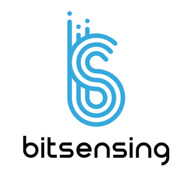

Kwangho Lee
- (+82)10-7154-8293
- lex.less38@gmail.com
- Pangyo, S.Korea
I work as an AI Research Engineer at NAVER WEBTOON, specializing in Generative AI, including computer vision and large language models (LLM). I have participated in numerous AI research projects, successfully addressing real-world problems with practical solutions. My focus lies in devising effective strategies to make these models more accessible and user-friendly. I hold a Bachelor's degree in Computer Science from UNIST, where I also pursued a minor in Human-Computer Interaction (HCI). During my time at UNIST, I gained valuable experience working in several AI research labs, including Prof. Sungju Hwang's Machine Learning and Vision Research (MLVR) Lab. I aspire to develop AI technologies and services that are loved and widely used by people around the world.
Work Experiences
 Naver Webtoon AI
Naver Webtoon AI
AI Research Engineer
I have conducted research and engineering on generative models, including GAN and diffusion, and applied them to various computer vision domains such as image, video, and 3D. Additionally, I have expanded my expertise to large language models (LLM), utilizing RAG and Agentic LLM to solve diverse problems and contribute to improving work efficiency. I participated in numerous projects using Generative AI, including the creation of tools for creators and artists.
 Bitsensing Inc.
AI Research Engineer
Bitensing is a startup focused on radar chipset and sensors for autonomous driving. At Bitsensing, I researched and developed object detection modules for autonomous driving by fusing computer vision and radar sensors.
- Developed a robust gesture recognition model for radar sensors operating in noisy environments.
- Researched the object detection model for autonomous driving and embedded it into an edge device.
- Set up ML-Ops architecture using docker, kubeflow, and katib.
- Investigated camera & radar sensor fusion.
Public Projects
Webtoon Comprehension AI(WCAI)
WEBTOON Comprehension AI (WCAI) is a scalable story understanding agentic system designed to support marketing, recommendation, and localization teams by automating narrative comprehension across WEBTOON series. Built on LangGraph-based agentic workflows, it integrates VLM-powered visual-text analysis to identify characters, speakers, and plot structures. I contributed to the architecture and deployment of these workflows, enabling over 70% automation of manual content tagging and improving team productivity. The system incorporates LangSmith for robust tracing and supports SME collaboration to generate business-specific insights such as high-CTR keywords and genre recommendation.
Webtoon Comprehension AI
Shaper
Shaper is a 3D modeling tool designed as a creation support tool for WEBTOON creators. Shaper allows creators to build 3D character models and seamlessly change their poses without needing to sketch each pose manually. I contributed to the successful NASDAQ IPO through the development of the hand pose retargeting module as part of the body pose retargeting system, enhancing the functionality of Shaper.
Character Photocard
We conducted research and development on generating character photocard using the diffusion model. This service needed to be versatile, as users could input various forms of prompts, requiring adaptability to multiple scenarios. Our focus was on researching the model that consistently produces high-quality character images under any circumstances.
Photocard
백도화
이수호
임주경
WebtoonMe
WebtoonMe is a project that transforms "myself" into a webtoon character. I was one of the initial members of this project, responsible for researching and developing the WebtoonMe core technology. I architected the overall workflow with my team.
WebtoonMe 1
WebtoonMe 2
LINE Webtoon Year-in-review
At the LINE Webtoon year-in-review page, we utilized the talking head model to generate animations for webtoon characters. Our focus was on creating animations naturally, so that they are not perceived as AI-generated results. We also ensured the capability to handle hundreds of characters.
share page

yearend page

instagram #2021BarengWEBTOON
Publications
Chupa: Carving 3D Clothed Humans from Skinned Shape Priors using 2D Diffusion Probabilistic Models
Byungjun Kim*, Patrick Kwon*, Kwangho Lee, Myunggi Lee, Sookwan Han, Daesik Kim, Hanbyul Joo
LPMM: Intuitive Pose Control for Neural Talking-Head Model via Landmark-Parameter Morphable Model
Kwangho Lee*, Patrick Kwon*, Myung Ki Lee, Namhyuk Ahn, Junsoo Lee
Cross-Domain Style Mixing for Face Cartoonization
Seungkwon Kim, Chaeheon Gwak, Dohyun Kim, Kwangho Lee, Jihye Back, Namhyuk Ahn, Daesik Kim